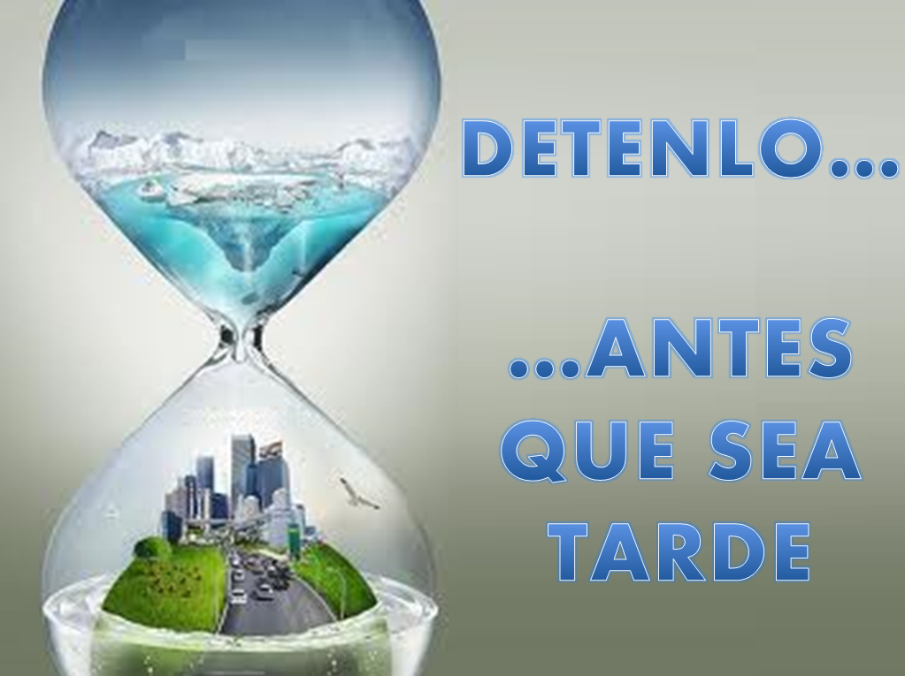
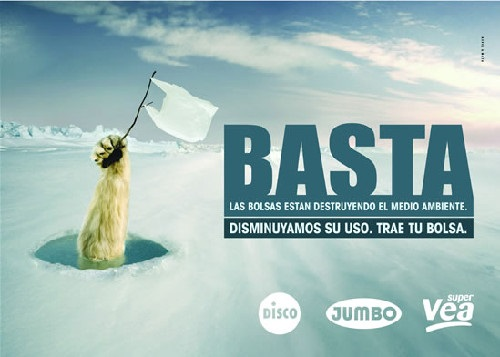
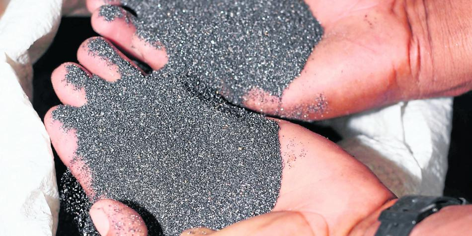
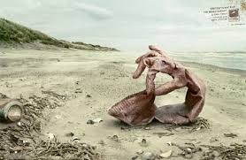

|

(proganda por aja inc.) |
|
El coltan es un mineral, combinacion de niobio y tantalio, hasta hace poco desconocido.
Las grandes industrias electronicas para poder producir necesitan de este mineral, ya que tiene una serie de propiedades y caracteristicas (tales como la resistencia al calor, por ejemplo)
que son necesarias para el buen funcionamiento de nuestros aparatos electronicos, como nuestro
celular, nuestros computadores, nuestro gps, entre otras cosas que hacen parte de una lista casi interminable.
|

(proganda por aja inc.) |
|
El lugar del mundo con los yacimientos de coltan mas explotados es Republica del Congo, en Africa.
Y como concecuencia de esto, hay miles de desplazamientos forzosos, violacion de ancianas, mujeres y ninas, miles de civilies han huido de sus hogares, y hay millones de personas refugiadas.

|
(proganda por aja inc.) |
|
Como conclusion podemos decir que el coltan es uno de los principales causantes del deterioramiento de medio ambiente;
a causa de la sobreexplotacion de coltan se esta tambien violando los derechos humanos de los habitantes del Congo y se estan explotando inhumanamente;
Y por ultimo, el marco legal de esta situación nos permite ver como nosotros
los consumidores tenemos deberes tanto con la sociedad como con el medio ambiente.

|
(proganda por aja inc.) |